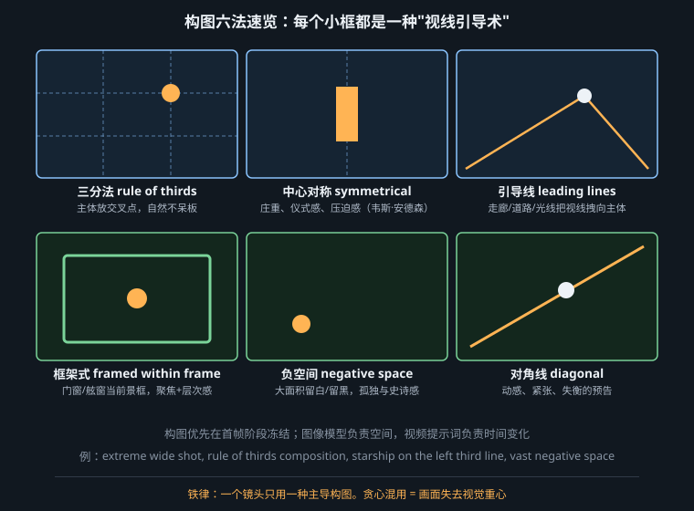

把“看多近、看哪里、看清哪一层”拆成三个独立决策，再把它们写成可验证的动态镜头

景别、构图与景深经常被塞进一句“电影感特写”里，但它们控制的是不同问题。景别规定主体在画面中占多大，改变观众与人物的心理距离；构图规定主体、线条、留白和视线在二维画框内怎样组织；景深规定沿镜头纵深方向有多少空间保持可辨认。三者可以自由组合：特写可以深景深，远景也可以用前景虚化；中心构图不等于浅景深，负空间也不等于远景。
| 变量 | 它回答的问题 | 主要叙事作用 | 验收时看什么 |
|---|---|---|---|
| 景别 | 主体占画面多大？ | 调节信息量与情绪距离 | 头、肩、腰、全身及环境范围是否符合目标 |
| 构图 | 主体放在哪里？ | 建立权力、方向、稳定或失衡 | 视觉中心、留白方向、边缘切割是否一致 |
| 景深 | 前后哪些层清楚？ | 分配注意力并说明空间关系 | 焦点层、虚化层和主体轮廓是否可读 |
cinematic close-up只大致声明景别与风格，不能自动保证眼睛落在三分线、背景柔化、前景不遮脸。提示词应分别写出主体占幅、画面位置、前中后景关系；若某项不重要，就明确留给模型，而不是误以为模型已经理解。
图像模型只需在一个时刻找到合理布局，视频模型却要在连续帧中维持同一套空间约束。人物走近镜头时，占幅会自然增大；摄影机横移时，三分法的交点会相对背景滑动；前景物掠过时，模型还要判断遮挡次序；一旦同时要求推镜、转身、焦点转移和复杂背景，有限的时序一致性便会在多个目标间竞争。
因此，动态提示词应把约束分成三层：先锁定起始状态，再描述单一主要变化，最后声明结束状态与不变量。例如“中近景、人物位于左三分之一”是起点，“摄影机缓慢向右横移”是变化，“人物仍保持左侧占幅，右侧城市逐渐展开”是终点。比起堆叠摄影术语，这种可观察的状态描述更接近模型需要完成的任务。
| 景别 | 适合承担 | 动态生成风险 | 更可执行的写法 |
|---|---|---|---|
| 大远景 / 远景 | 环境、规模、人物路径 | 人物身份与肢体细节易漂移 | full figure occupies about 15% of frame |
| 中景 | 动作、对话、人物关系 | 手部与道具交互成为薄弱点 | framed from waist up, both hands visible |
| 中近景 / 特写 | 表情、反应、情绪转折 | 轻微形变会非常显眼 | chest-up close framing, stable facial identity |
| 大特写 | 眼神、按钮、关键物证 | 眨眼、反射和局部结构易突变 | only the eye and eyebrow region fill the frame |
景别变化本身也能叙事：由远到近通常增加卷入感，由近到远常用于揭示环境或释放情绪。但不要在短镜头里同时要求“从大远景连续推进到眼睛大特写”，跨度越大，人物比例、背景几何和运动速度越难同时稳定。更稳妥的办法是拆成两至三镜，在剪辑点完成跨级跳转；若必须单镜完成，则降低人物动作与环境复杂度，并用首尾帧或参考图约束。
“三分法”“中心对称”“引导线”是分析标签，生成模型更容易执行的是对象关系。三分法应补充主体在哪一侧、朝向哪里、哪边留出视线空间；中心构图应说明对称轴和背景元素；负空间应说明留白位于何处、是否要容纳字幕。动态镜头还要考虑构图如何随时间变化：主体可以固定在画框位置而背景移动，也可以让主体从边缘进入中心，这两种运动表达完全不同。
人物运动时要优先保护头顶空间、视线空间和关节完整性。提示词可写“the camera tracks laterally to preserve her left-third placement”，但这仍是意图而非几何锁定；平台若提供运动笔刷、路径、关键帧或区域控制，应优先使用这些显式工具。
浅景深通过降低背景细节竞争，把注意力集中到人物或物件；深景深让前后关系都可读，适合空间调度、群像与环境线索。对多数生成式视频平台而言，35mm、85mm、f/1.8、f/11通常是语义提示：它们调用训练数据中的摄影外观，不代表平台真的按传感器尺寸、对焦距离和光圈公式计算景深。不同平台甚至会忽略数字，只响应“shallow depth of field”“background softly blurred”这类结果描述。
所以应把物理术语与可见结果同时写出，例如：85mm portrait look, shallow depth of field, her eyes remain crisp while the station lights form soft bokeh。需要深焦时则写清层次：deep focus, both the foreground control panel and the distant doorway remain readable。背景虚化不能修复杂乱构图；如果主体与背景色值接近，还要用轮廓光、色彩或位置分离。
焦点从前景转到背景的 rack focus 涉及连续的清晰度迁移、焦外形态变化与主体一致性，部分模型能偶尔生成，但并非必然可靠。关键叙事信息不要只押在一次焦点转移上。可先测试单一动作版本；失败时拆成两个不同焦点的镜头，以剪辑、遮挡转场或短叠化完成注意力交接。
Duration 7 seconds, 16:9 cinematic narrative video, one continuous shot. A lone female station operator stands beside a rain-streaked observation window at night. Start in a stable medium close-up, framed from the chest up; she occupies the left third of the frame, looking toward the open negative space on the right. Her eyes and facial identity remain crisp and consistent. The camera performs one slow, smooth lateral track to the right while preserving her left-third placement. As the background is revealed, a distant evacuation ship rises silently beyond the glass. Shallow depth-of-field portrait look: her face stays sharply focused, foreground raindrops are softly diffused, and distant city lights form restrained bokeh. Cool blue ambient light, a subtle warm rim light on her cheek, quiet tension, realistic motion, natural blinking, restrained breathing, no dialogue. End with the operator still chest-up on the left and the ship clearly readable in the right-side background. No zoom, no orbit, no sudden reframing, no focus pull, no extra people, no text, no logo, no camera shake.
这条提示词先定义时长、画幅与单镜头，再锁定中近景、左三分构图和右侧留白；唯一主要变化是横移揭示飞船，人物位置与焦点是明确不变量。末句排除推拉、环绕和焦点转移，减少模型自行“加戏”。若平台没有负面提示词栏，可将限制保留在正文末尾；若平台对否定句响应较差，则删到只剩最关键的两三项。
| 输入或控制 | 通常能约束什么 | 不能默认保证什么 | 实践建议 |
|---|---|---|---|
| 文本中的景别 / 构图词 | 总体取景倾向与主体位置 | 逐帧固定占幅、精确像素坐标 | 补写身体范围、占幅、朝向和结束状态 |
| 焦距、光圈数字 | 相应摄影风格的语义联想 | 真实镜头物理、精确视角与景深计算 | 同时写可见结果，不把数字当硬参数 |
| 首帧 / 参考图 | 起始构图、角色、色彩与空间线索 | 运动后的身份、遮挡和透视永远不漂移 | 参考图本身先通过构图验收，减少大幅运动 |
| 首尾帧 / 关键帧 | 起点和终点状态 | 中间路径自然、速度恒定 | 首尾差异保持单一，必要时缩短时长 |
| 运动路径 / 镜头控件 | 方向、幅度或局部运动 | 所有平台含义一致 | 以当前平台文档和实测为准，勿照搬参数 |
| seed、guidance、motion strength | 部分平台的随机性或服从度倾向 | 跨模型复现、数值含义通用 | 记录平台、模型版本与日期，单变量对照 |
先确认平台是否真正暴露某项控件，再谈参数。只有文本框的平台，应采用“可见状态 + 单一变化 + 不变量”；支持参考图的平台，用画面锁空间；支持区域、轨迹或关键帧的平台，再把文本与显式控制组合。任何模型升级都可能改变词语权重，旧项目的最佳参数不应被当作永久配方。
| 症状 | 常见原因 | 修正动作 |
|---|---|---|
| 人物越走越大，景别失守 | 主体接近镜头，却要求占幅不变 | 改为横向运动，或明确摄影机同步后移；必要时拆镜 |
| 主体从三分线漂到边缘 | 横移、摇镜和人物动作同时竞争 | 只保留一种主运动，写明“preserve left-third placement” |
| 背景很糊，但主体也软 | 只写了浅景深，没有指定焦点对象 | 明确“eyes remain sharply focused”，降低运动与遮挡 |
| 焦点转移时物体变形或跳切 | rack focus 与对象一致性同时失败 | 取消焦点转移，分别生成前景焦点和背景焦点两镜 |
| 远景人物像贴纸或身份漂移 | 人物像素太少，环境细节过多 | 提高人物占幅、简化背景，或用近景反应镜补身份 |
| 画面“电影感”强但信息不清 | 风格词压过叙事关系 | 删除冗余风格词，先验收主体、动作、位置与清晰层 |